熊野摩崖仏＆胎蔵寺/大分県
大分県の国東半島は八幡信仰と天台修験が融合した六郷満山文化が花開いた土地である。
その国東の文化を象徴するひとつが熊野摩崖仏である。
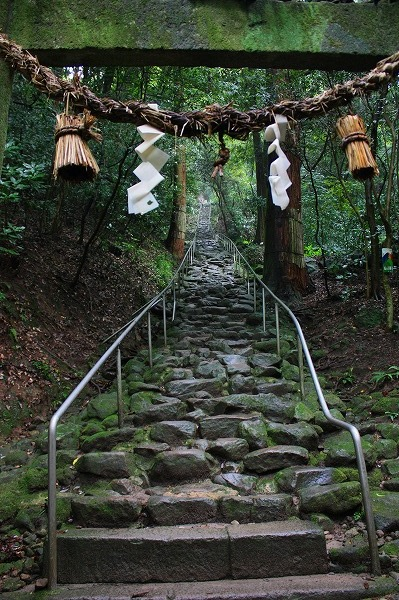
熊野摩崖仏へは駐車場から歩いてアプローチする事になる。
鬼が一夜にして積み上げたといわれる石段を登っていくのだが、コレが乱積みもいいところで、登りきるのに汗まみれ。
鬼よ、一夜でやっつけ仕事にもほどがあるぞ。もう少し丁寧な石段にしてくれよ。
…てなわけでヘロヘロになりながら摩崖仏に到着する。あーつかれた。
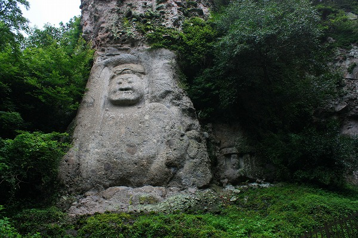
で、不動明王。高さ8メートルの巨大な摩崖仏である。
ご尊顔が若干ユーモラスだが、これだけ大きいとそんな事は対して気にならなくなる。ただただその大きさに慄くばかり。
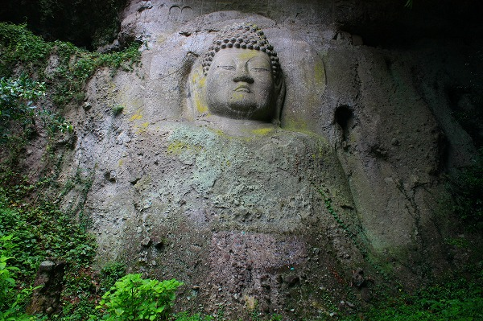
そして大日如来。こちらは6.7メートル。
やや窪んだところに彫られているので不動明王に比べて状態が良い。
いずれも平安後期に刻まれた摩崖仏で、国の重要文化財に指定されている。。
頭上には鎌倉時代の種子曼陀羅が刻まれている。
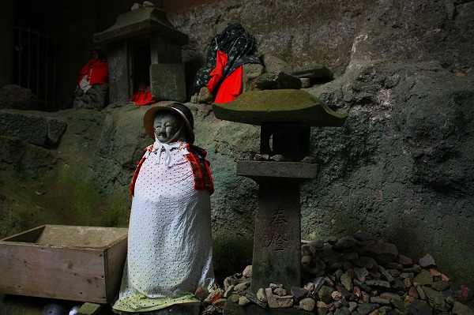
摩崖仏からしばらく登ると、熊野権現がある。
石積みや地蔵の前掛けなどが奉納され、重文の摩崖仏に比べて現在進行形の信仰の痕跡が見られる。
さて。
いつものパターンですが、ここからが本題です。
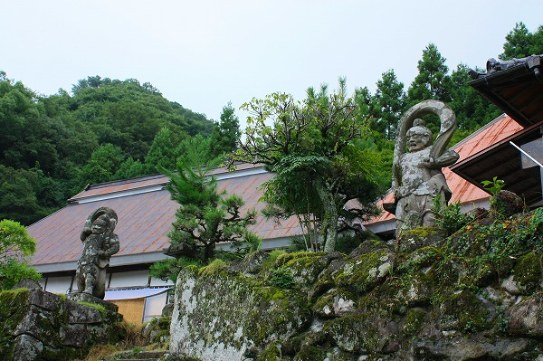
熊野摩崖仏の駐車場の前に胎蔵寺というお寺がある。
大抵の観光客はスルーしてしまうようだが、折角だから寄ってみることにした。
本当は足がガクガクで余計な階段とか一段たりとも登りたくなかったのだが、何故か行ってみようという気になったのだ。
今思えば宇佐八幡様のお導きだったのかも知れない（そんな訳はないか）。
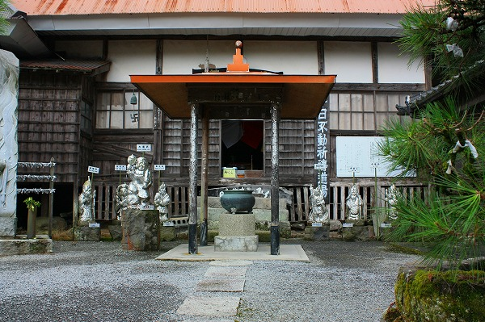
この胎蔵寺は神仏習合の頃は熊野権現を管理していたという。
当然、熊野摩崖仏とも密接な関係があった事だろう。現在は天台宗の寺院という位置付けになっている。
で、だ。
気になるのはお堂の前にあるこちらの方々。
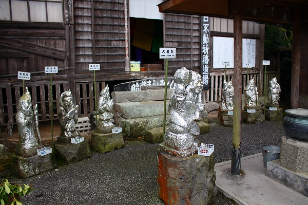
やけに七福神様たちがピカピカしてません？
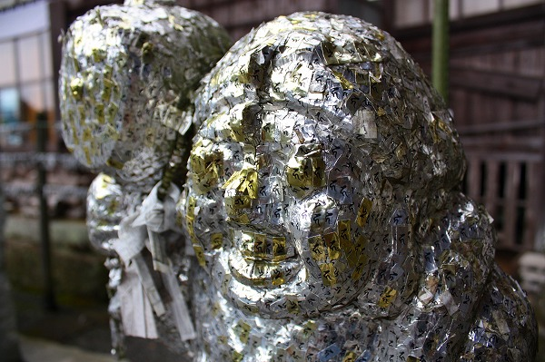
近づいてみたら全部びっっっっっっしりとシールが貼られまくってるじゃないの！
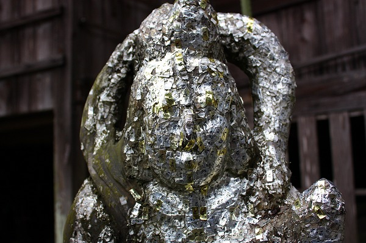
このシール、見れば全部梵字が印字されているシールなのだ。
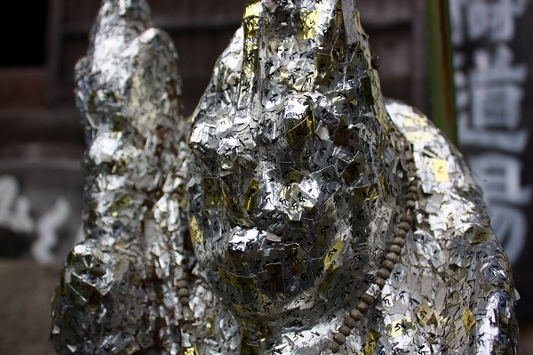
恐らくお寺側で用意したものなのだろう。
よくアジアのお寺に行くと喜捨ののひとつとして金箔を仏像に貼るケースがあるが、それを模したものなのだろうか。
もちろんこのシールは金箔でもなければ銀箔でもない。ただのシールである。
ついでに言えば全体的に銀色が多いが、これとて金色のシールが退色して銀色になったのかもしれないのだ。
一体何でシールを貼る事になったのか、その事情は判らないが、とにかくある時期からその行為が宗教的儀礼（と言うほどではないが）として定着して現在に至っているのだ。
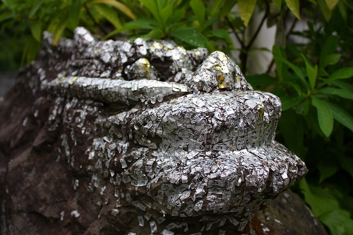
七福神の近くにいた竜の石像もとばっちりを受けて銀色に。
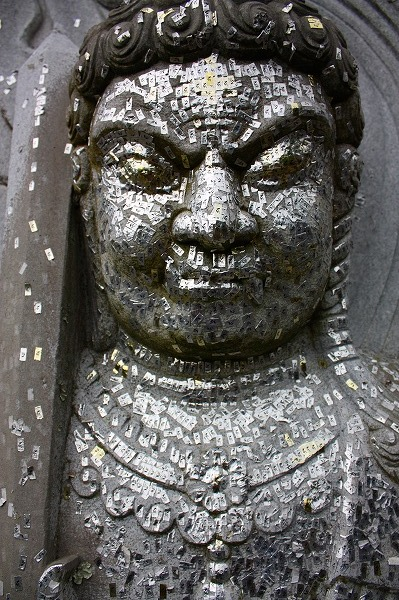
近くにあった不動明王もシール責めにあっていた。
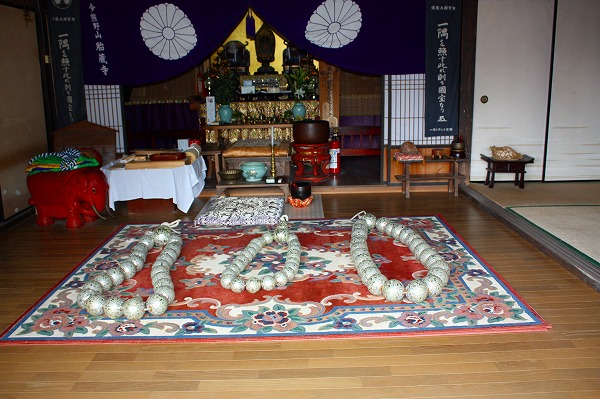
お堂の中を覗くと巨大な数珠が3つ並んでいた。
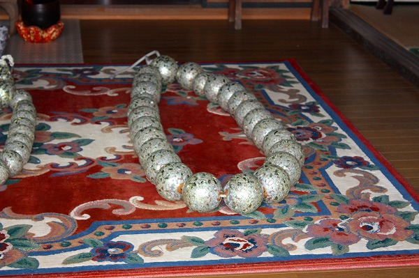
よく見るとその数珠までシールまみれ。
このシール奉納、どこまで拡張するのだろう…。
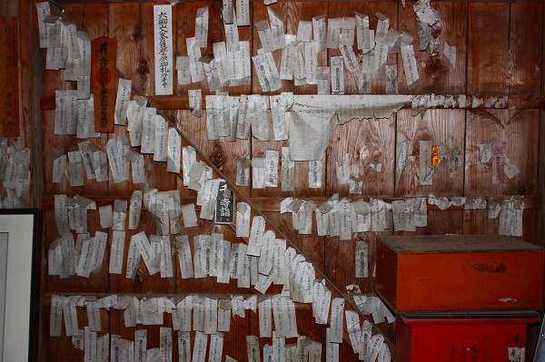
壁を見るとたくさんの札が貼られていた。
この寺は国東六郷満山三十一霊場の六番目の札所になっており、巡礼の証として紙札が貼られているのだ。
そう考えると、ここは元々紙札を貼る事が日常的に受け入れられてきた場所だったのだ。
だからシールを貼る事も比較的抵抗感なく受け入れられたのかもしれない。
紙札もシールも一緒！という大らかな信仰心が生み出した光景なのだろう。
でもさ。
重文として保護されている熊野摩崖仏の不動明王よりもここの不動明王の方が歴史も浅いし、訪れる人も少ないけど、信仰されている度数としては明らかに上、だよね。
2008.08.
珍寺大道場 HOME